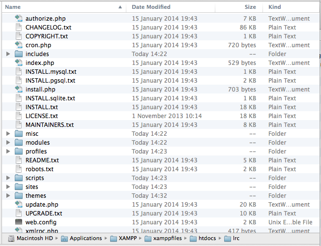
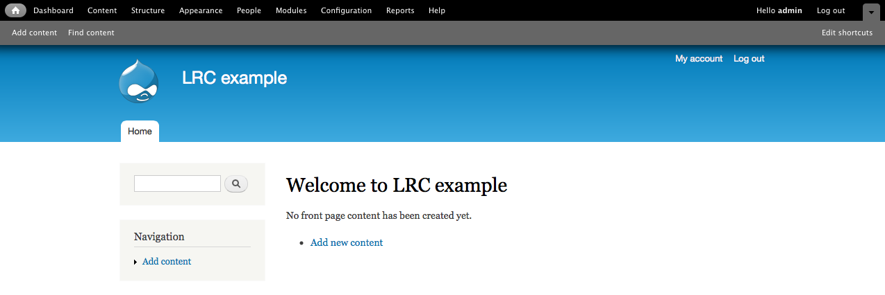
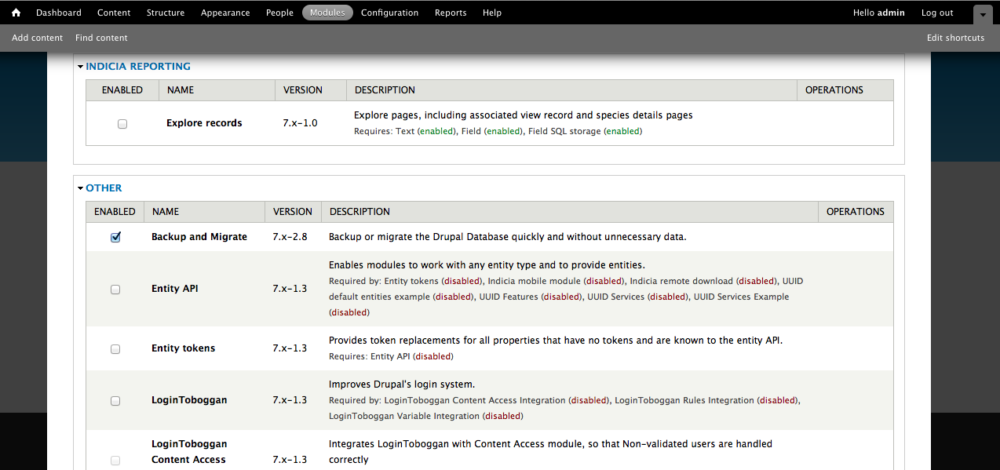
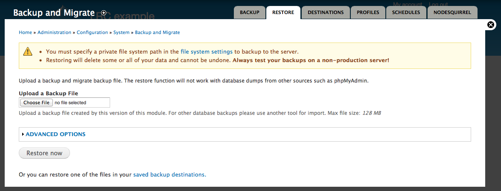

The LRC Drupal Template can be installed from a backup of the site. This is the simplest way to get started. The site backup is provided as 2 files:
The first step is to unzip your lrctemplate.zip file into the place you want your website files to run from, as dictated by the web server setup. For this illustration, I’ve made a folder called lrc in the web root folder of an installation of XAMPP running on OS X. This means that my development site copy will be available at http://localhost/lrc. Into this folder, I’ve unzipped the lrctemplate.zip file so that the folder structure is as follows:
Note that I’ve also created a MySQL database called lrc and user account ready to install against as described in the previous step.
Depending on your operating system, you may need to change file permissions to get Drupal to run properly. The Drupal folder and its contents should generally be all read-only to the web server process with a few exceptions:
You should also at this point copy the file default.settings.php and rename the new file settings.php. This latter file will need to be writeable during the installation process only.
Now you are ready to run the Drupal installation script. This process is exactly the same as any other installation of Drupal, so you can refer to the standard documentation. Follow the steps described for Drupal 7 installation. Don’t forget to make a note of the site maintenance account details you specify in the installation wizard, as these are used to gain full access to the site.
Once the script has completed, you’ll be presented with a Visit your new site link so click on this to enter the site proper.
At the moment, you’ve got a basic installation of Drupal with the default Drupal theme, with no content, menus, custom modules, online recording facilities or themes setup. Fortunately all the files required for all this are already in place, so we just need to restore the MySQL database which holds all the configuration information required. The backup and restore process used here depends on a module called Backup & Migrate so the first thing we need to do is to enable this module.
Click on the Modules menu item in the black menu bar across the top of the page. We’ll refer to this as the admin toolbar from now on.
You are now looking at a list of all the downloaded modules for Drupal with the enabled modules ticked. There are of course many more modules available on drupal.org. Search for the module called Backup and Migrate then tick it:
Scroll to the bottom of the page and click Save configuration.
Backup and Migrate will add an extra page to your website allowing administrators to backup and restore the MySQL database which drives the website. To access this page, click Configuration on the admin toolbar, then find and click the Backup and Migrate link on the right of the page.
We want to restore a database, so click the Restore tab.
Click the Choose file button then browse to and select the lrctemplate.mysql.gz file.
Click Restore now.
That’s the basic install process done. You can skip forward to the Post installation steps.